"From the students for the students"
Intro
From May 2019 to May 2021 I was part of the Students Faculty Council at the Faculty of Mathematics and Informatics, Sofia University. As a member, I wanted to do something for the council that would be useful and used by the members of the next generations.
Overall goal
The council had a Worpress website that design and structure weren't updated since 2014. So I decided I will take the initiative to update it. I wanted my university colleges to find important information more easily, answers to their questions, and to have a place where the role and activity of the students' council will be recorded.
Problem statement
One of the problems with the old design is that it wasn't very responsive. And since 2014 the use of smartphones to search for information and do daily work has risen. So our focus was for the site to be mobile-first. Also, there was a lot of outdated information that had to be updated.
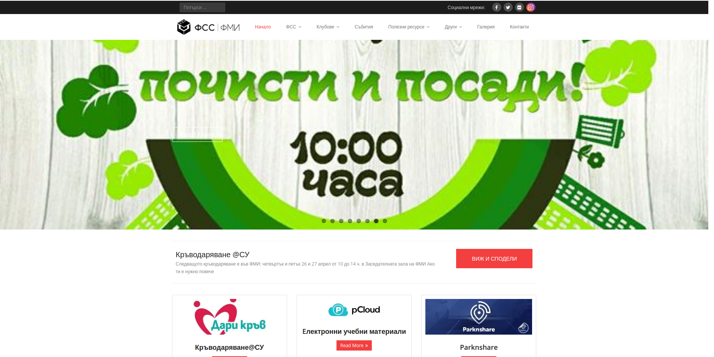 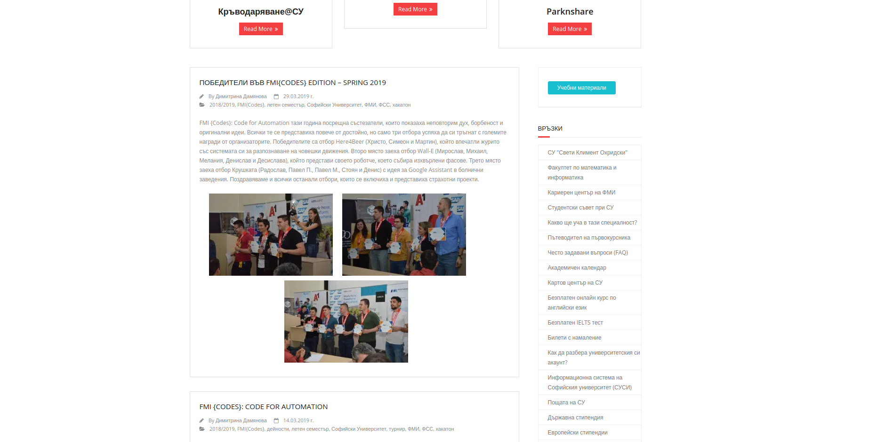 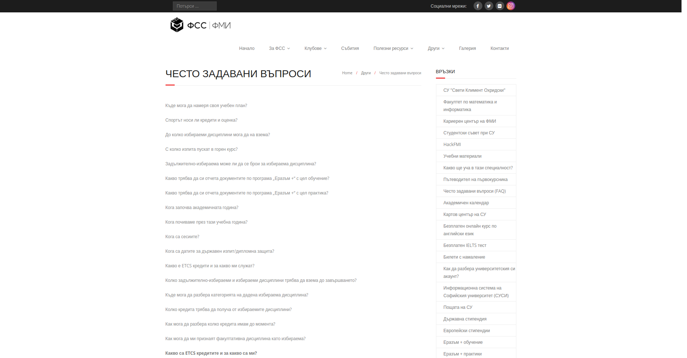Team
To be the work done we formed a workgroup of 5 people:
- Petko Petkov - he had the most experience in the activities of the council and helped with the new structure of the website, and updated old information on the site
- Rosina Georgieva - at the time she was the chairman of the council's PR commission, so she was responsible for the content (text descriptions ) of the website, and updated old information on the site
- Nikola Totev - helped with the new structure of the website, and updated old information on the site
- Todor Dimitrov - helped with the new structure of the website, and updated old information on the site
My main role was to organize, coordinate, track if work has done, and make changes to the website. As a whole, we had meetings and worked together to update the website.
Process
First, we started with the structure of the old website. I had created a sitemap of it.
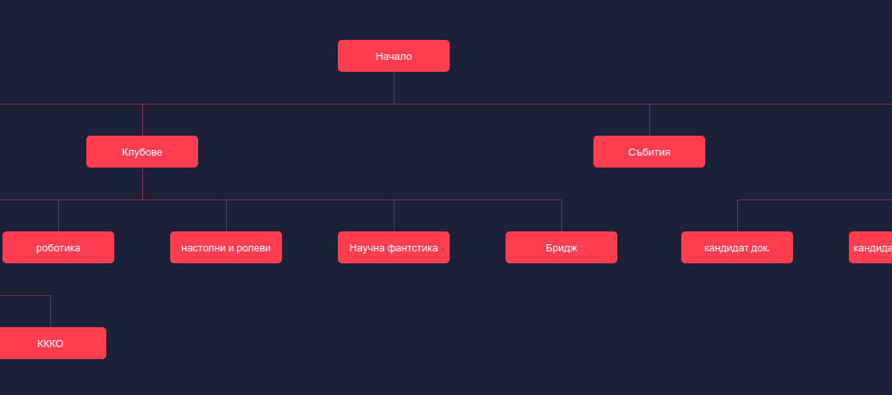And after we discuss what changes we will do and who will take what section to edit I have created a new sitemap.
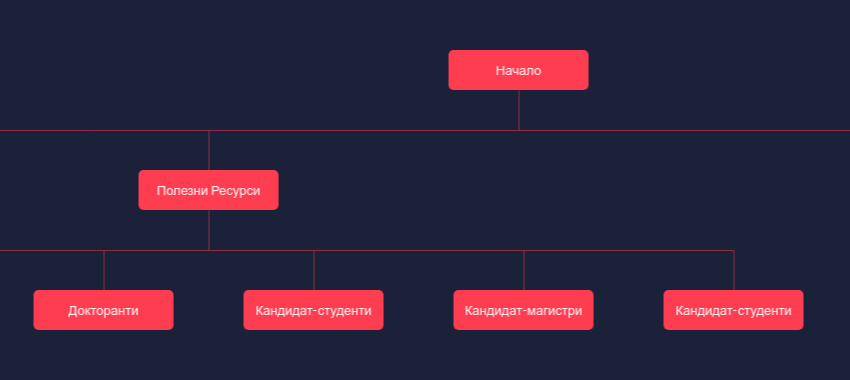The next step I did was to create a mockup of our main(home) page based on the statistics of the most visited pages of the site and what the council want's
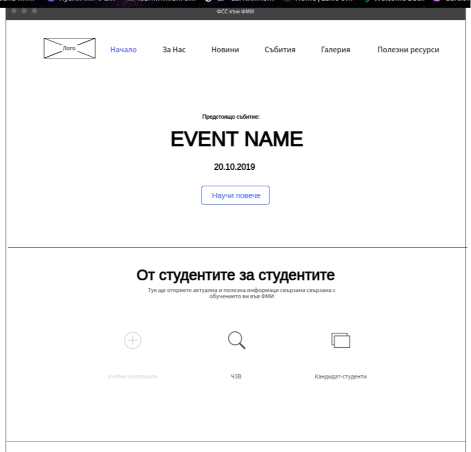 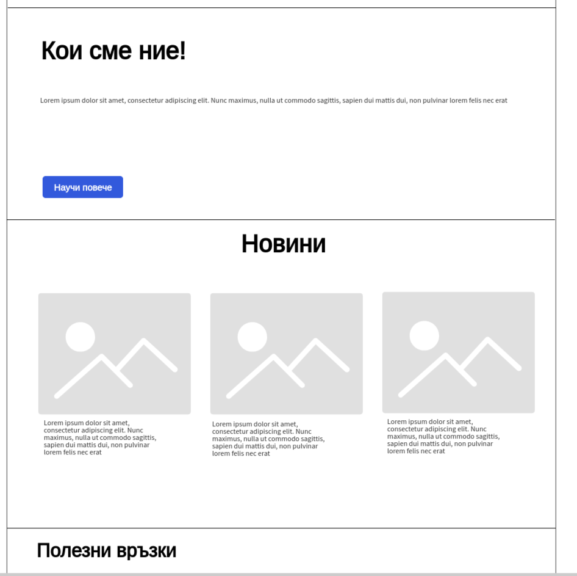 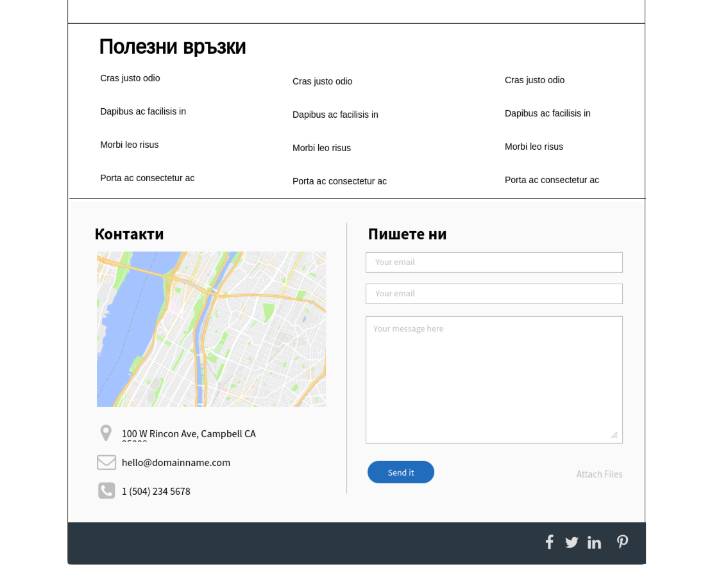In the mockup there are 6 sections:
- Upcoming Events - The idea of the first section was to show the upcoming events in a slider and to redirect users to more information about them.
- Shortcuts - The main usage of the second section was to be a shortcut to the most important parts of the site - University materials, Frequently Asked Questions, and Information for candidate students. In this way, they will spend less time searching for this information on the site.
- About Us - The third section had the role to tell about the council in few sentences who we are and to redirect users to information about us.
- News - Here we are going to be displaying news about our events, university information, and more.
- Useful links - The idea of this section is to have useful university links in one place, so students more easily can find their needed information from other websites.
- Contacts - In this mockup, we have a contact section, because is less in less engaging for the users to scroll down than searching a button in the navigation bar.
But after discussion we decided to change:
- Section 1 - because we use social media for promoting events and our audience learns about them from there.
- Section 3 - we decided to remove this section and to put it in the first place. Because we want when our audience visits our site to learn more about who we are, what we do, and how they can join.
- Section 5 - we put this section under the contacts section.
Also to add a Contact us page also for more additional information. The next step was to find a WordPress Theme that will be responsive and will be ideal for our ideas.
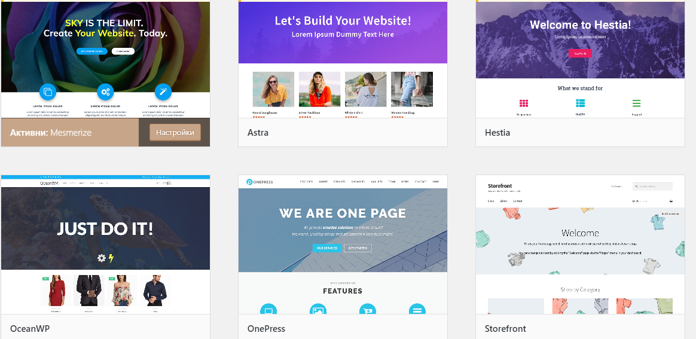We have tried few themes but finally decided to use Hestia, because the layout and customization met our needs.
Final look
After 2 months of work, our new site was ready. ....and this was the final result you can see here (https://fss.fmi.uni-sofia.bg/)
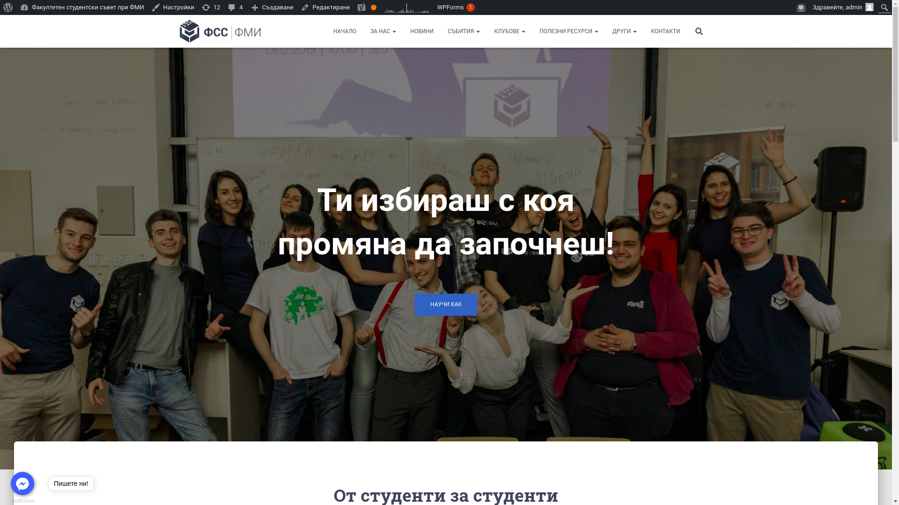 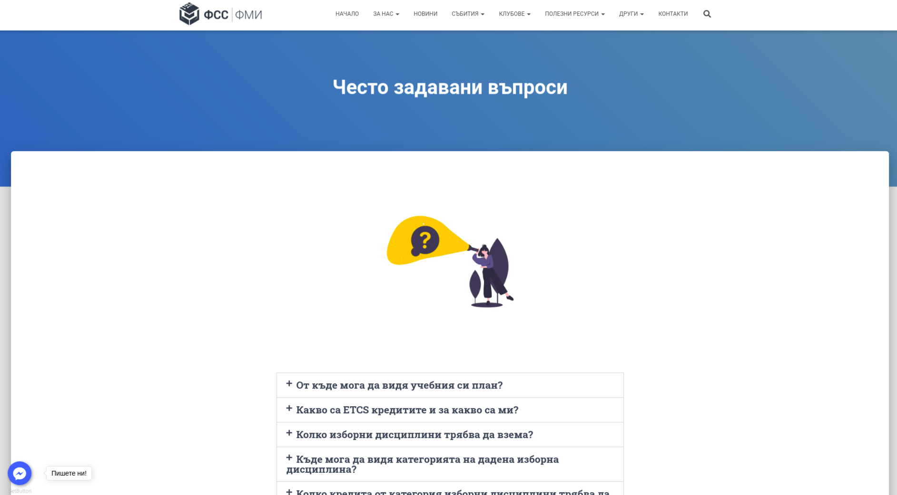